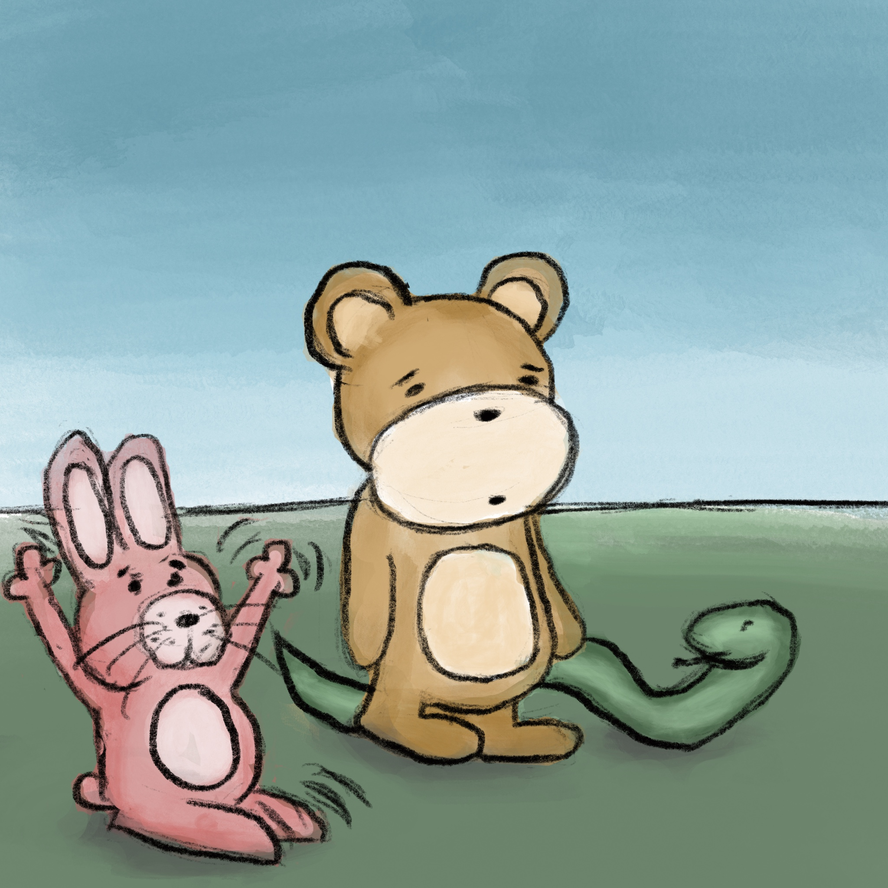

As they walked away the bear's friend Marcus caught up with them. "Have you heard?" he cried, "It turns out eating pine needles can cure depression!" as he waved his arms, twitched his ears, and tapped his toes excitedly. The bear didn't even turn to look at him; in a tired voice he said "Umm, that doesn't sound right, Marcus. I wish you would verify these things with more reliable sources." Jasper turned to look at Marcus but said nothing, concerned about the bear's growing despondence. #88
Marcus’ friend Erfan, hearing about the pine needles, rushed up to join the group, flapping his wings with excitement. "Yeah I heard that also! Tell me more!” Jasper, unable to stay quiet any longer, burst out “Bear, remember why we came here? To connect with your friends?” The bear ignored them all and kept walking. #89
"And what's going on over by that tree?” Jasper asked. They walked up to the tree to see a woman sobbing heavily, her arm over her eyes. "She must be having a hard time,” the bear said with compassion. #90